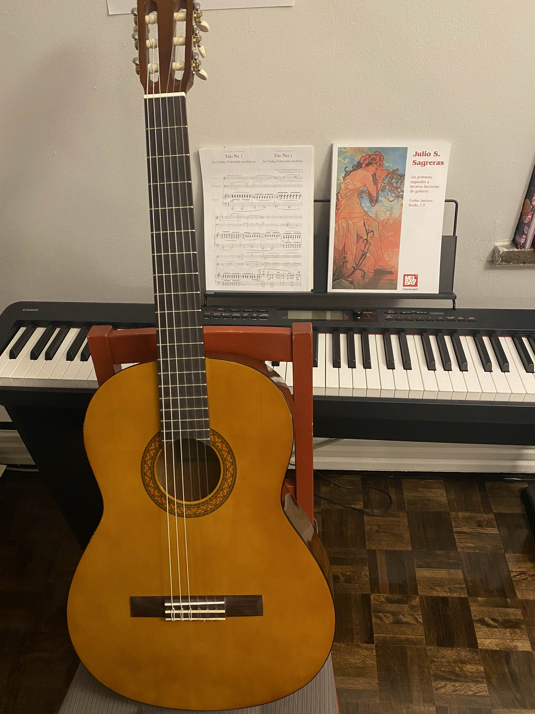

About Me
Hobbies/Pastimes

The most unique of my hobbies, I think, is classical guitar. I got a Yamaha C40 for my 21st birthday and I have been slowly learning to play from Julio Sagreras's Book. I've been wanting to learn for a long time, mostly because of a few particular songs like Terry Riley's Francesco en Paraiso which I'm still a long ways away from. One fun fact is that classical guitars and acoustic guitars are not the same! Classical guitars have wider fretboards than acoustics as chords are used less in classical guitar music with the focus being on melodic lines. Classicals also use nylon strings while acoustics have steel strings which gives a very different sound.
Theos
This is a game I made with two of my friends Tim and Kevin in our final year of high school for our software engineering course.Made entirely in java from scratch, other than using swing for GUI, this is a basic civilization/city-builder game roughly inspired by Sid Meier's Civilization. I personally coded most of the game logic and mechanics, with Tim handling the interfaces and Kevin making the graphics and much of the documentation required for the project such as this user help guide which you might find slightly helpful if you'd like to play the game.
You can download the .jar file for Theos here.
Warning: The music may be very loud on launch!! (Thanks to our friend Roman who wasn't even in our class for making the music by the way)